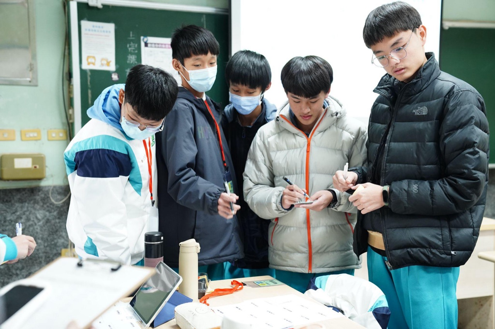

資訊判讀能力
看懂現況、資料、需求與問題之間的關係，不被零散訊息牽著走。
For Students
給青年
資訊隨手可得、AI 工具普及，真正稀缺的不再是答案，而是一套能反覆使用的判斷與行動能力——在不確定的環境中看懂問題、理解他人、形成目標，並把事情推進。尋路計畫陪你練的，就是這件事。

你會獲得什麼
鄉育把抽象的「能力」轉譯成你和外部受眾都看得懂的語言。這六種能力可以帶到升學、職場、創業與人生的各種選擇裡反覆使用。
看懂現況、資料、需求與問題之間的關係，不被零散訊息牽著走。
理解不同角色的立場、語言、期待與決策邏輯，找到溝通的施力點。
從混亂資訊中整理出真正需要解決的方向，而不是急著給答案。
把想法推進成可執行的方案與流程，讓計畫真的動起來。
在企業、學校與社會現場中練習、修正與驗證，讓能力被看見。
理解每個行動背後的選擇、成本、責任與影響，做得出可承擔的決定。
怎麼加入
從了解計畫、提出諮詢到正式加入，每一步都有人陪你確認方向。尋路計畫主要與大專院校共同開設，也持續拓展多元入口。
Step 01
先認識尋路計畫的方法與 16 週課程設計，確認它能回應你現在的迷惘與需求。
Step 02
透過聯絡頁或來信告訴我們你的學校與想探索的方向，由團隊協助你找到合適的入口。
Step 03
進入 16 週尋路課程，在真實情境中反覆練習六大能力，累積可被看見的成長證據。
常見問題
這裡整理青年最常問的幾個問題。若有未列出的疑問，歡迎與我們聯絡。
尋路計畫主要與大專院校共同開設，多數青年會在合作學校的課程或專案中接觸到我們。如果你的學校尚未開設，或你想以其他方式參與，歡迎透過聯絡頁告訴我們你的學校與想探索的方向，由團隊協助你找到合適的入口。
尋路計畫是一套 16 週的結構化課程，依 ACT 四階段方法循序推進，讓你在真實情境中反覆練習六大底層能力。實際的上課時段與節奏會依合作學校的安排而定，確認後由開課窗口公告。
尋路計畫多由合作學校共同開設，是否收費與相關安排會依合作形式而定。個別情形請洽你所在學校的開課窗口，或先與我們聯絡，我們會協助你確認最合適的參與方式。
尋路計畫強調在企業、學校與社會現場中的真實情境實作，因此會包含面對面的練習與驗證。實際採線上、實體或混合形式，會依合作學校的課程設計而定，由開課窗口確認後公告。
很適合。尋路計畫不是為已經想清楚的人設計的，課程正是為了陪你釐清方向而存在。它練的是判斷與行動的底層能力，而不是特定成績或既有規劃，無論你還在迷惘或想驗證想法，都能在過程中找到自己的方向。
你會帶走六大可反覆使用的底層能力——資訊判讀、關係人理解、目標形成、行動設計、真實情境實作，以及決策與責任感；同時累積一份成長履歷，把你在真實情境中的練習與成果，化為可被外部看見的能力證據。